Terni distribuzione traccianti
06 December, 2023
Biomass_Burning_CR
Shapiro-Wilk normality testdata: df$log_value W = 0.90756, p-value = 5.414e-12
Soil_Dust_CR
Shapiro-Wilk normality testdata: df$log_value W = 0.92024, p-value = 5.578e-11
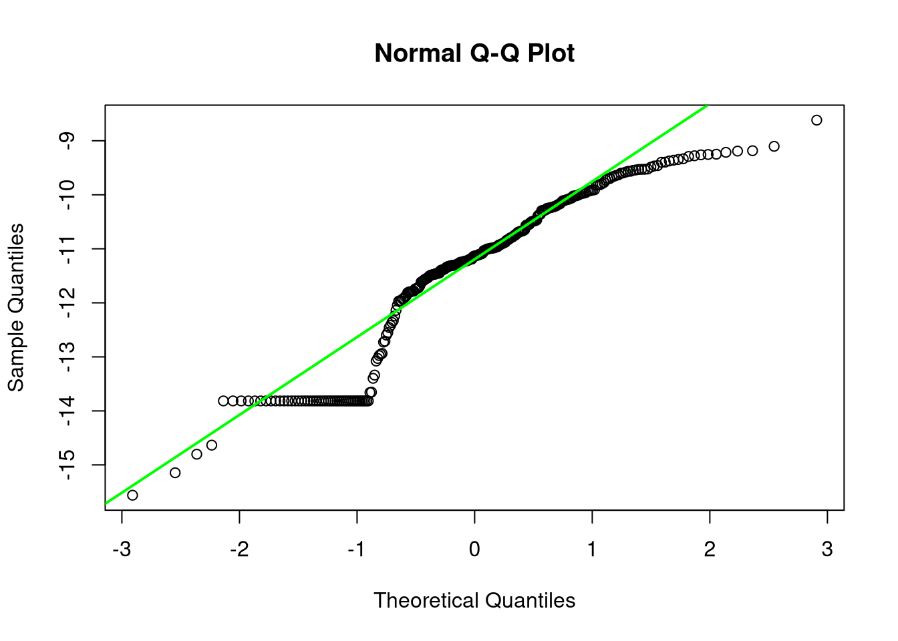
Steel_Plant_CR
Shapiro-Wilk normality testdata: df$log_value W = 0.86502, p-value = 7.946e-15
Road_Dust_CR
Shapiro-Wilk normality testdata: df$log_value W = 0.72026, p-value < 2.2e-16
Biomass_Burning_NCR

Shapiro-Wilk normality testdata: df$log_value W = 0.48411, p-value < 2.2e-16

Soil_Dust_NCR
Shapiro-Wilk normality testdata: df$log_value W = 0.58508, p-value < 2.2e-16

Steel_Plant_NCR


Shapiro-Wilk normality testdata: df$log_value W = 0.55369, p-value < 2.2e-16
Road_Dust_NCR
Shapiro-Wilk normality testdata: df$log_value W = 0.44066, p-value < 2.2e-16
Brake_Dust_NCR
Shapiro-Wilk normality testdata: df$log_value W = 0.50628, p-value < 2.2e-16
PM10
Shapiro-Wilk normality testdata: df$log_value W = 0.98211, p-value = 0.001564
Al_i
Shapiro-Wilk normality testdata: df$log_value W = 0.98171, p-value = 0.00132
Al_s
Shapiro-Wilk normality testdata: df$log_value W = 0.98083, p-value = 0.0009146
As_i
Shapiro-Wilk normality testdata: df$log_value W = 0.65444, p-value < 2.2e-16
As_s
Shapiro-Wilk normality testdata: df$log_value W = 0.92716, p-value = 2.215e-10
B_i

Shapiro-Wilk normality testdata: df$log_value W = 0.95742, p-value = 3.132e-07
B_s
Shapiro-Wilk normality testdata: df$log_value W = 0.94231, p-value = 6.239e-09
Ba_i
Shapiro-Wilk normality testdata: df$log_value W = 0.88298, p-value = 1.018e-13
Ba_s
Shapiro-Wilk normality testdata: df$log_value W = 0.97656, p-value = 0.0001668
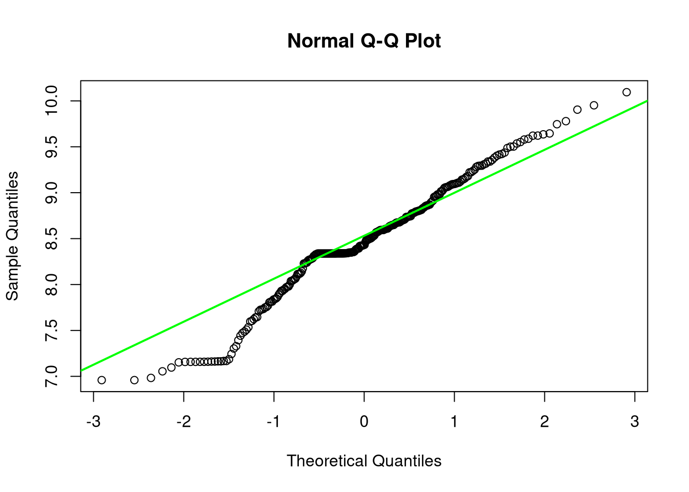
Bi_i
Shapiro-Wilk normality testdata: df$log_value W = 0.95072, p-value = 5.065e-08
Bi_s
Shapiro-Wilk normality testdata: df$log_value W = 0.87513, p-value = 3.235e-14
Ca_i
Shapiro-Wilk normality testdata: df$log_value W = 0.93958, p-value = 3.296e-09
Ca_s
Shapiro-Wilk normality testdata: df$log_value W = 0.96006, p-value = 6.713e-07
Cd_i
Shapiro-Wilk normality testdata: df$log_value W = 0.90126, p-value = 1.834e-12
Cd_s
Shapiro-Wilk normality testdata: df$log_value W = 0.97319, p-value = 4.79e-05
Ce_i
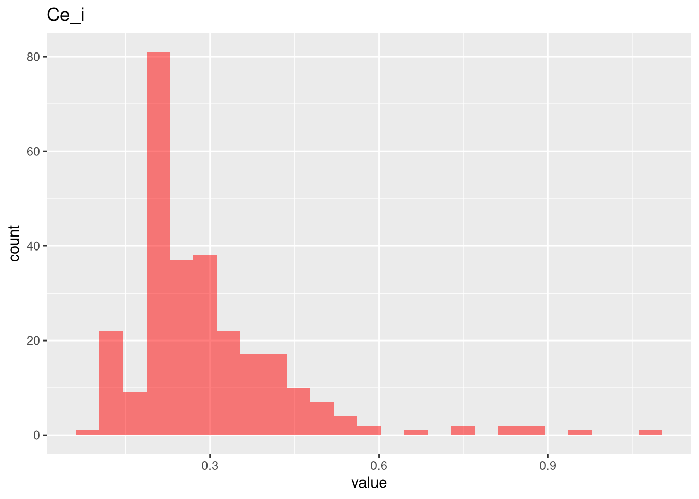
Shapiro-Wilk normality testdata: df$log_value W = 0.96453, p-value = 2.61e-06
Ce_s
Shapiro-Wilk normality testdata: df$log_value W = 0.6599, p-value < 2.2e-16
Co_i
Shapiro-Wilk normality testdata: df$log_value W = 0.90513, p-value = 3.545e-12
Co_s
Shapiro-Wilk normality testdata: df$log_value W = 0.90904, p-value = 7.029e-12
Cr_i
Shapiro-Wilk normality testdata: df$log_value W = 0.97633, p-value = 0.0001528
Cr_s
Shapiro-Wilk normality testdata: df$log_value W = 0.96447, p-value = 2.56e-06
Cs_i
Shapiro-Wilk normality testdata: df$log_value W = 0.7612, p-value < 2.2e-16
Cs_s

Shapiro-Wilk normality testdata: df$log_value W = 0.94174, p-value = 5.45e-09
Cu_i
Shapiro-Wilk normality testdata: df$log_value W = 0.9906, p-value = 0.07353
Cu_s
Shapiro-Wilk normality testdata: df$log_value W = 0.99364, p-value = 0.2948
Fe_i
Shapiro-Wilk normality testdata: df$log_value W = 0.98078, p-value = 0.000896
Fe_s
Shapiro-Wilk normality testdata: df$log_value W = 0.92017, p-value = 5.508e-11
Ga_i
Shapiro-Wilk normality testdata: df$log_value W = 0.77876, p-value < 2.2e-16
Ga_s
Shapiro-Wilk normality testdata: df$log_value W = 0.94063, p-value = 4.205e-09
K_i
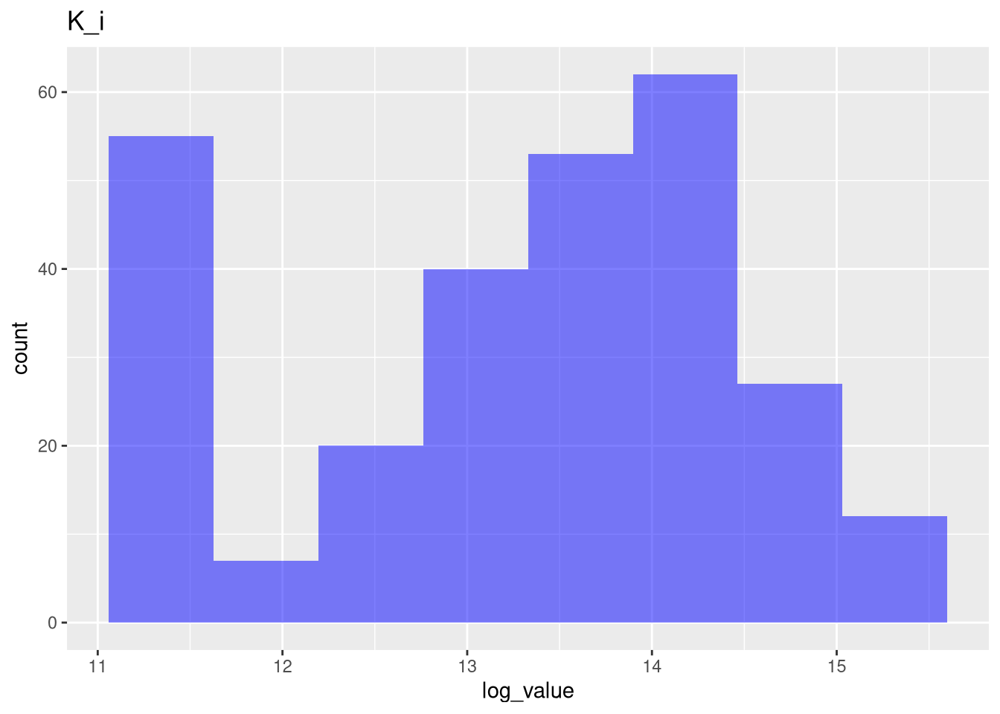
Shapiro-Wilk normality testdata: df$log_value W = 0.91773, p-value = 3.455e-11
K_s
Shapiro-Wilk normality testdata: df$log_value W = 0.92678, p-value = 2.05e-10
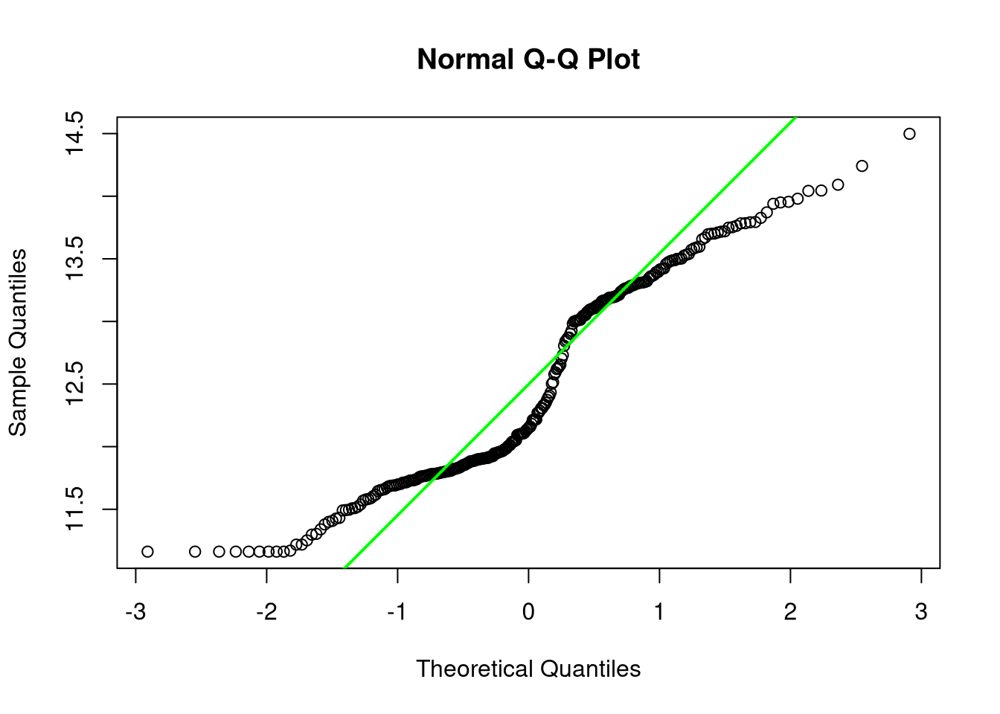
La_i
Shapiro-Wilk normality testdata: df$log_value W = 0.94445, p-value = 1.045e-08
La_s
Shapiro-Wilk normality testdata: df$log_value W = 0.36767, p-value < 2.2e-16
Li_i
Shapiro-Wilk normality testdata: df$log_value W = 0.98184, p-value = 0.001389
Li_s
Shapiro-Wilk normality testdata: df$log_value W = 0.98634, p-value = 0.01003
Mg_i
Shapiro-Wilk normality testdata: df$log_value W = 0.98919, p-value = 0.0377
Mg_s
Shapiro-Wilk normality testdata: df$log_value W = 0.96641, p-value = 4.749e-06
Mn_i

Shapiro-Wilk normality testdata: df$log_value W = 0.98038, p-value = 0.0007587
Mn_s
Shapiro-Wilk normality testdata: df$log_value W = 0.98373, p-value = 0.003128
Mo_i
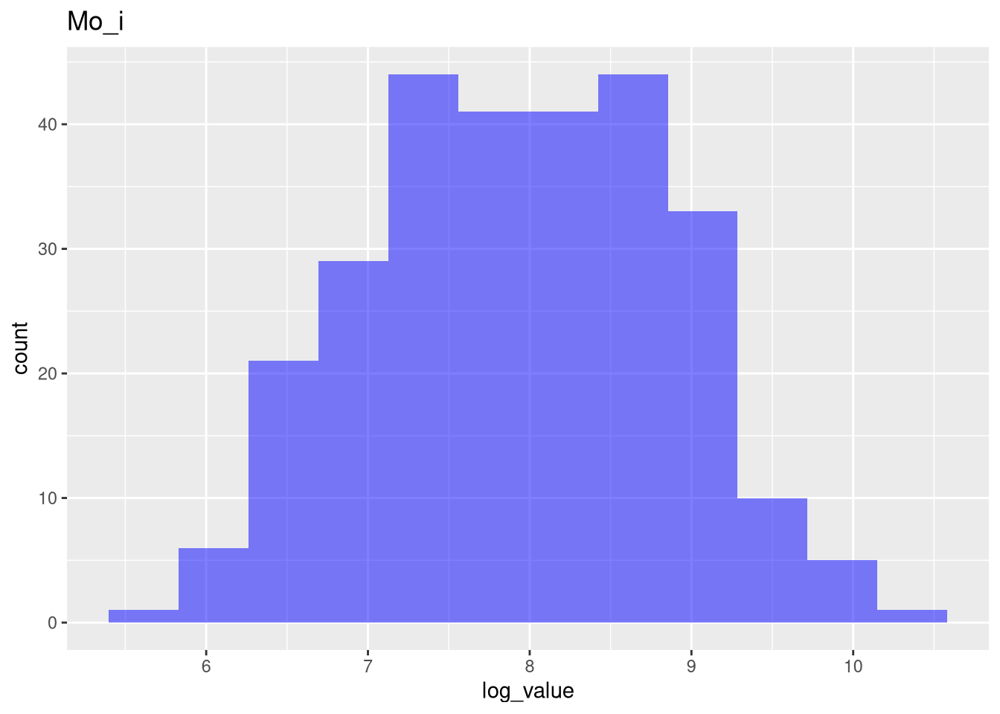
Shapiro-Wilk normality testdata: df$log_value W = 0.98967, p-value = 0.04738
Mo_s
Shapiro-Wilk normality testdata: df$log_value W = 0.96273, p-value = 1.496e-06
Na_i
Shapiro-Wilk normality testdata: df$log_value W = 0.9854, p-value = 0.006566
Na_s
Shapiro-Wilk normality testdata: df$log_value W = 0.88909, p-value = 2.581e-13
Nb_i
Shapiro-Wilk normality testdata: df$log_value W = 0.82658, p-value < 2.2e-16
Nb_s
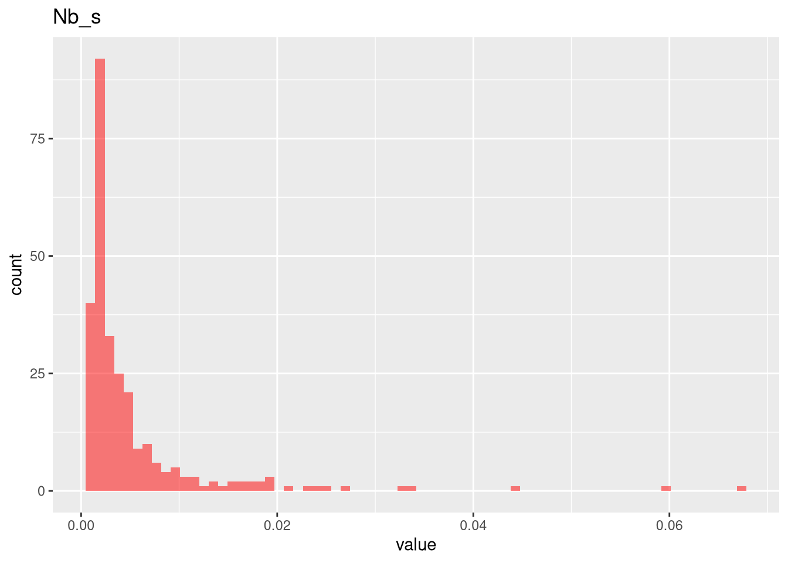
Shapiro-Wilk normality testdata: df$log_value W = 0.91647, p-value = 2.721e-11
Ni_i
Shapiro-Wilk normality testdata: df$log_value W = 0.95682, p-value = 2.643e-07
Ni_s
Shapiro-Wilk normality testdata: df$log_value W = 0.98013, p-value = 0.0006851
Pb_i

Shapiro-Wilk normality testdata: df$log_value W = 0.98213, p-value = 0.001577
Pb_s
Shapiro-Wilk normality testdata: df$log_value W = 0.96963, p-value = 1.378e-05
Rb_i
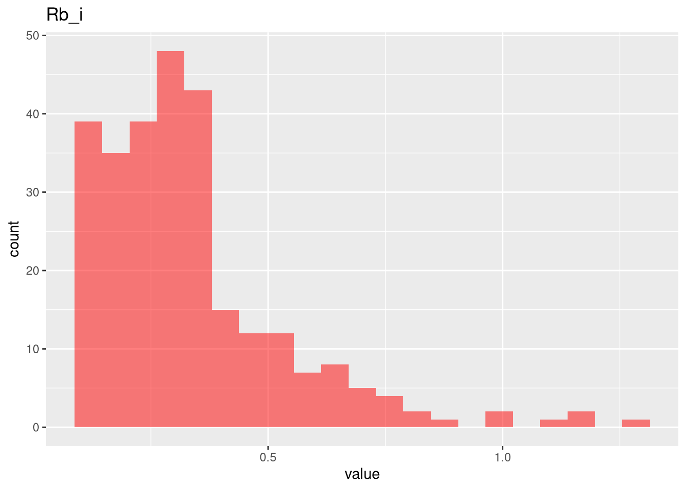
Shapiro-Wilk normality testdata: df$log_value W = 0.98474, p-value = 0.004895
Rb_s
Shapiro-Wilk normality testdata: df$log_value W = 0.98029, p-value = 0.0007322
Sb_i
Shapiro-Wilk normality testdata: df$log_value W = 0.97886, p-value = 0.0004104
Sb_s
Shapiro-Wilk normality testdata: df$log_value W = 0.95846, p-value = 4.214e-07
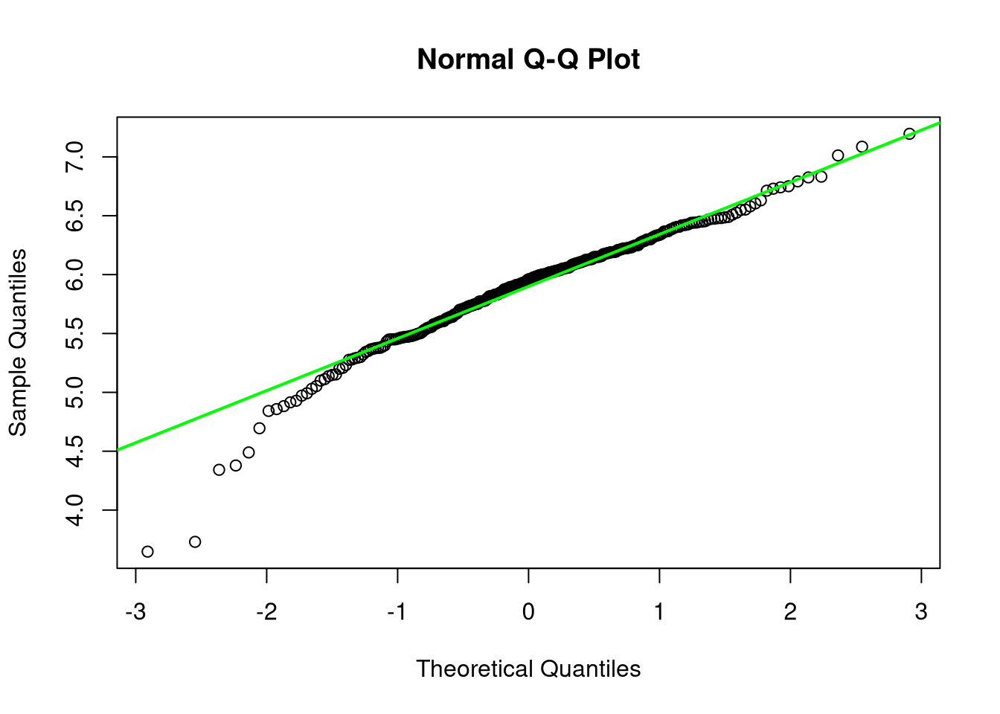
Sn_i
Shapiro-Wilk normality testdata: df$log_value W = 0.98249, p-value = 0.001835
Sn_s
Shapiro-Wilk normality testdata: df$log_value W = 0.9935, p-value = 0.2781
Sr_i
Shapiro-Wilk normality testdata: df$log_value W = 0.96617, p-value = 4.388e-06
Sr_s
Shapiro-Wilk normality testdata: df$log_value W = 0.98465, p-value = 0.004699
Ti_i
Shapiro-Wilk normality testdata: df$log_value W = 0.98936, p-value = 0.04095
Ti_s
Shapiro-Wilk normality testdata: df$log_value W = 0.75727, p-value < 2.2e-16
Tl_i
Shapiro-Wilk normality testdata: df$log_value W = 0.79674, p-value < 2.2e-16

Tl_s
Shapiro-Wilk normality testdata: df$log_value W = 0.93579, p-value = 1.398e-09
U_i
Shapiro-Wilk normality testdata: df$log_value W = 0.88114, p-value = 7.739e-14

U_s
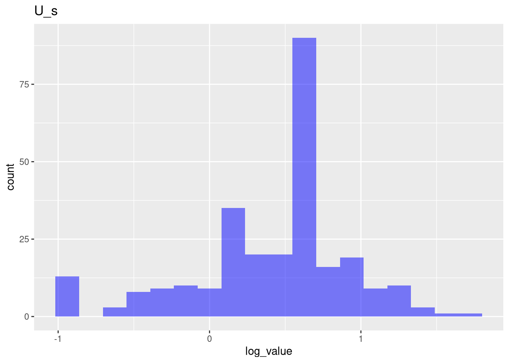
Shapiro-Wilk normality testdata: df$log_value W = 0.93608, p-value = 1.489e-09

V_i
Shapiro-Wilk normality testdata: df$log_value W = 0.91991, p-value = 5.241e-11
V_s
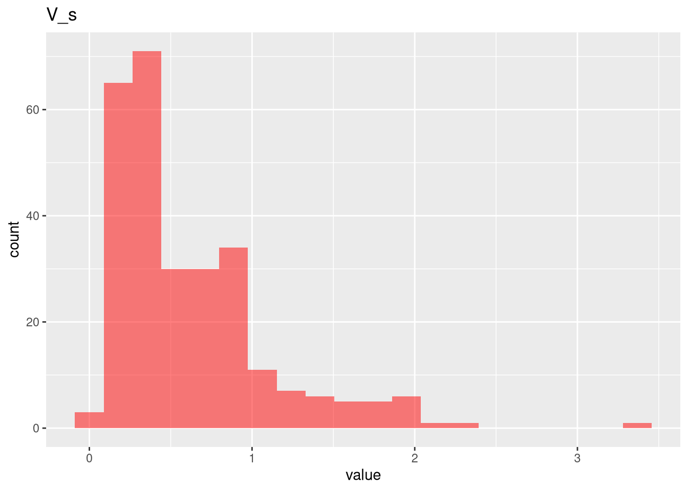
Shapiro-Wilk normality testdata: df$log_value W = 0.98202, p-value = 0.001502
W_i
Shapiro-Wilk normality testdata: df$log_value W = 0.95198, p-value = 7.052e-08
W_s
Shapiro-Wilk normality testdata: df$log_value W = 0.94611, p-value = 1.567e-08
Zn_i
Shapiro-Wilk normality testdata: df$log_value W = 0.94965, p-value = 3.83e-08
Zn_s
Shapiro-Wilk normality testdata: df$log_value W = 0.97056, p-value = 1.892e-05
Zr_i
Shapiro-Wilk normality testdata: df$log_value W = 0.95163, p-value = 6.423e-08
Zr_s
Shapiro-Wilk normality testdata: df$log_value W = 0.98341, p-value = 0.002723